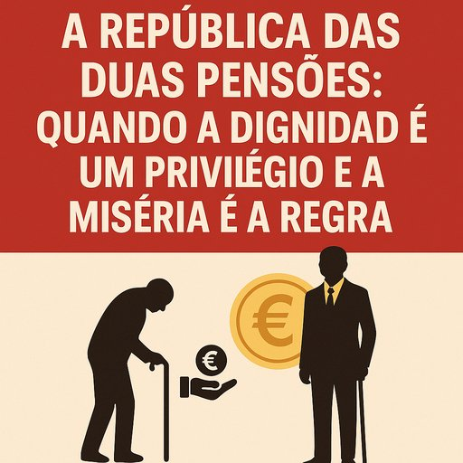

A República das Duas Pensões: Quando a Dignidade é um Privilégio e a Miséria é a Regra”?
Publicado em 2025-05-29 21:58:11

📉 Portugal em dois números:
- Pensões médias da Caixa Geral de Aposentações (CGA):
👉 1.707€, com muitos reformados da administração central a receberem 2.459€ em média.
- Pensões da Segurança Social (a maioria dos portugueses):
👉 Quase 1 milhão de pessoas com pensões abaixo de 500€.
🧨 O escândalo institucionalizado:
É o país onde quem trabalhou toda a vida no privado sobrevive com esmolas,
e quem pertenceu à máquina do Estado sai com tapete vermelho e cheque vitalício.
"Dois portugueses reformam-se — um chora a conta da farmácia, o outro compra casa no Algarve. Ambos, dizem, viveram no mesmo país. Mas não viveram na mesma República."
📉 E o truque das contas públicas:
- A CGA teve um défice de 202 milhões — pago com 823 milhões do Orçamento do Estado.
- A Segurança Social, que sustenta os mais pobres, teve um excedente de 5.595 milhões.
Isto significa:
os pobres pagam os privilégios dos protegidos pelo Estado.
⚖️ O paradoxo:
A máquina do Estado é deficitária, mas protegida.
O povo é superavitário… mas maltratado.
Francisco Gonçalves